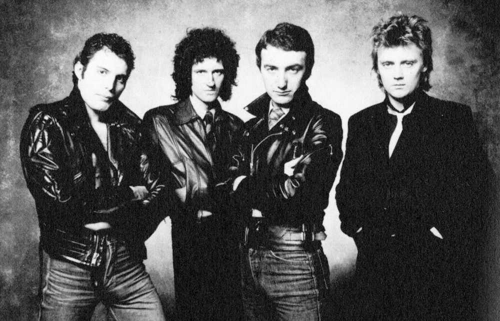

그리고 이듬해 1975년, 퀸은 4집 A Night at the Opera를 발매했고, 앨범의 리드싱글로 6분에 달하는 대곡 Bohemian Rhapsody가 우여곡절 끝에 발매되어 영국 1위, 미국 빌보드 9위를 기록하며 퀸은 세계적인 밴드로 도약하게 된다.
이듬해 1976년, 퀸은 5집 A Day at the Races를 발매하는데, 프레디 머큐리 작곡의 Somebody to Love 와 브라이언 메이 작곡의 'Tie Your Mother Down'이 히트하며 전작의 성공이 단순한 행운이 아니었음을 입증하게 된다. 하지만 평론가들로부터는 너무 정형화되었다는 평가를 받았다.
1977년, 6집 News of the World를 발매하고 We Will Rock You와 We Are The Champions를 히트시킨 퀸은 펑크 록의 영향으로 여타 선두주자 밴드들이 주춤하는 사이 이 앨범의 히트에 힘입어 음악계에서 자신들의 입지를 굳혀 갔다. 그리고 이때 매니저인 존 리드와 양자 합의하에 계약을 파기하고 그들만의 기획사를 만들게 된다.

79년의 퀸, 머리가 짧아진 것이 눈에 띈다.
이후 1978년의 7집 앨범 Jazz는 이전의 앨범들에 비해서는 직선적이면서도 대중적인 곡들로 채워져 있었는데, 이에 대한 평단의 반응은 여전히 냉정했다. 하지만 밴드는 영국을 포함한 유럽, 남미, 일본 등에서 아주 큰 인기를 누렸으며 특히 프레디 작곡의 Don't Stop Me Now가 큰 인기를 끌게 되었다. 그리고 이듬해 1979년, 밴드는 그 해 이루어졌던 투어 'Jazz'의 라이브를 추합해 밴드의 첫 라이브 앨범인 'Live Killers'를 발매한다.